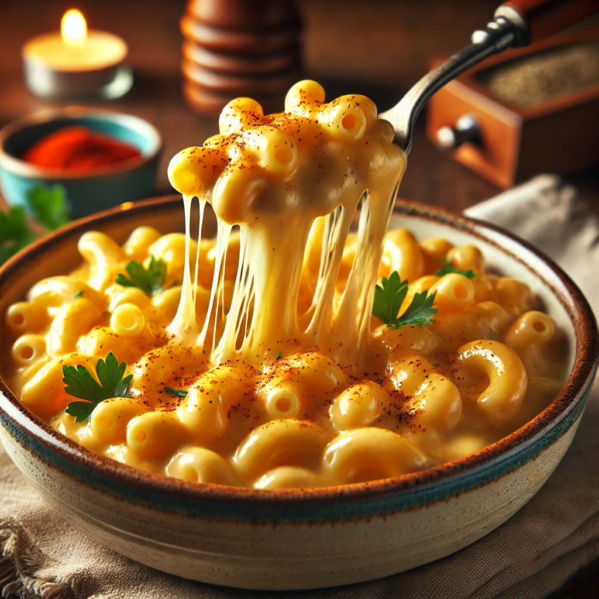

Heavy Hitter Mac & Cheese

Description
Now, this right here? This is that stick-to-your-bones, warm-you-up kinda meal.
Ain’t nothin’ fancy—just tender noodles swimming in a rich, creamy cheese sauce, all gooey and smooth like it’s supposed to be.
A lil’ sprinkle of paprika and parsley on top, just to make it feel extra special.
You take one bite, and baby, that’s home.
Ingredients
- 12 oz elbow macaroni
- 2 cups shredded cheddar cheese
- 1 cup shredded mozzarella cheese
- 2 cups milk
- 2 tbsp butter
- 2 tbsp all-purpose flour
- ½ tsp salt
- ½ tsp black pepper
- ½ tsp paprika (optional)
Go on' and Make it!
- Cook the pasta : Boil macaroni according to the package instructions. Drain and set aside.
- Make the cheese sauce : In a saucepan, melt butter over medium heat. Stir in flour and cook for 1 minute. Gradually whisk in milk, stirring until thickened.
- Add the cheese : Lower the heat and stir in cheddar, mozzarella, salt, pepper, and paprika until smooth.
- Combine : Mix the cooked pasta into the sauce until fully coated.
- Serve & enjoy : Serve hot or transfer to a baking dish, top with extra cheese, and broil for a golden crust.
Go on' back Home for some more recipes!